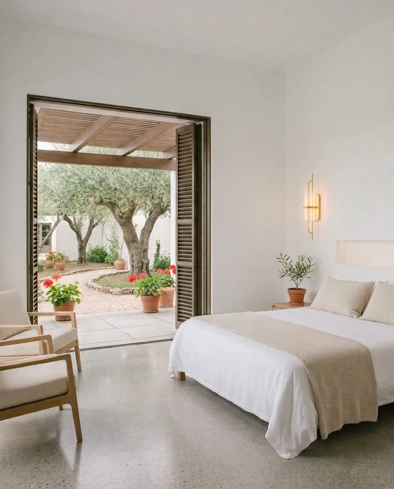
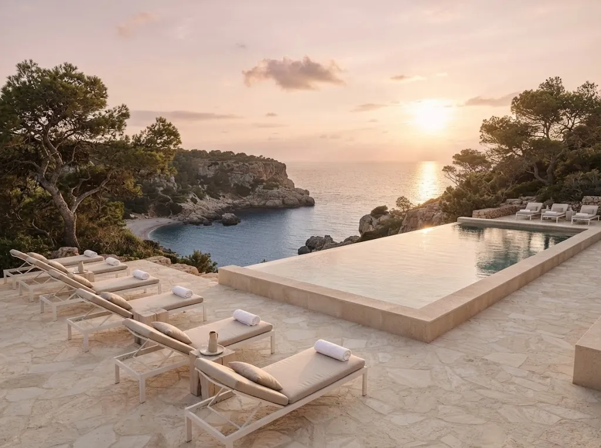
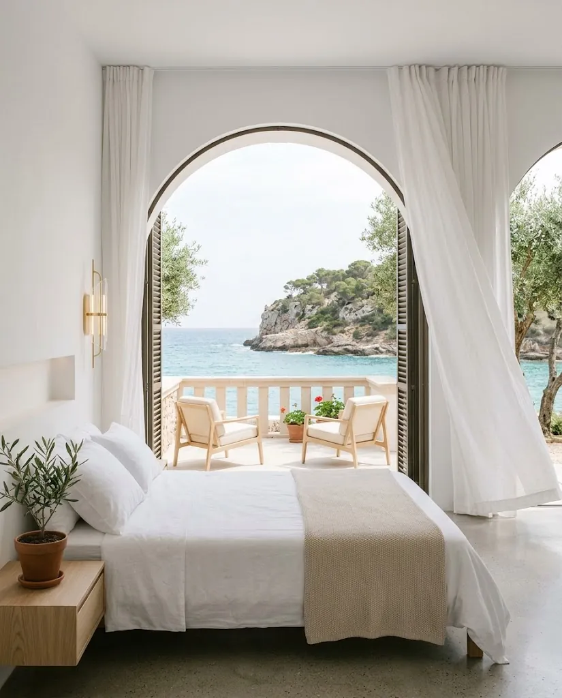
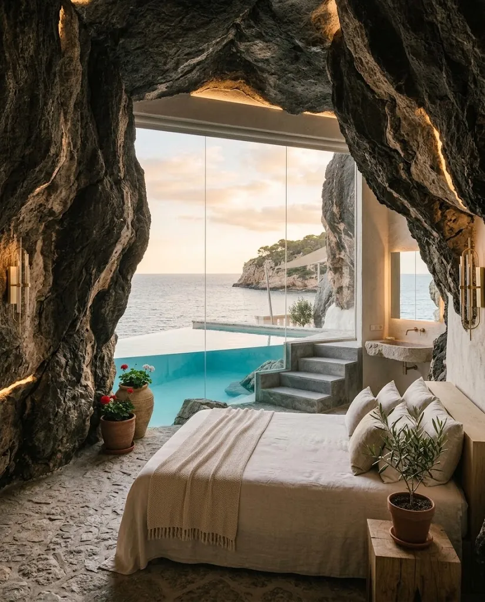
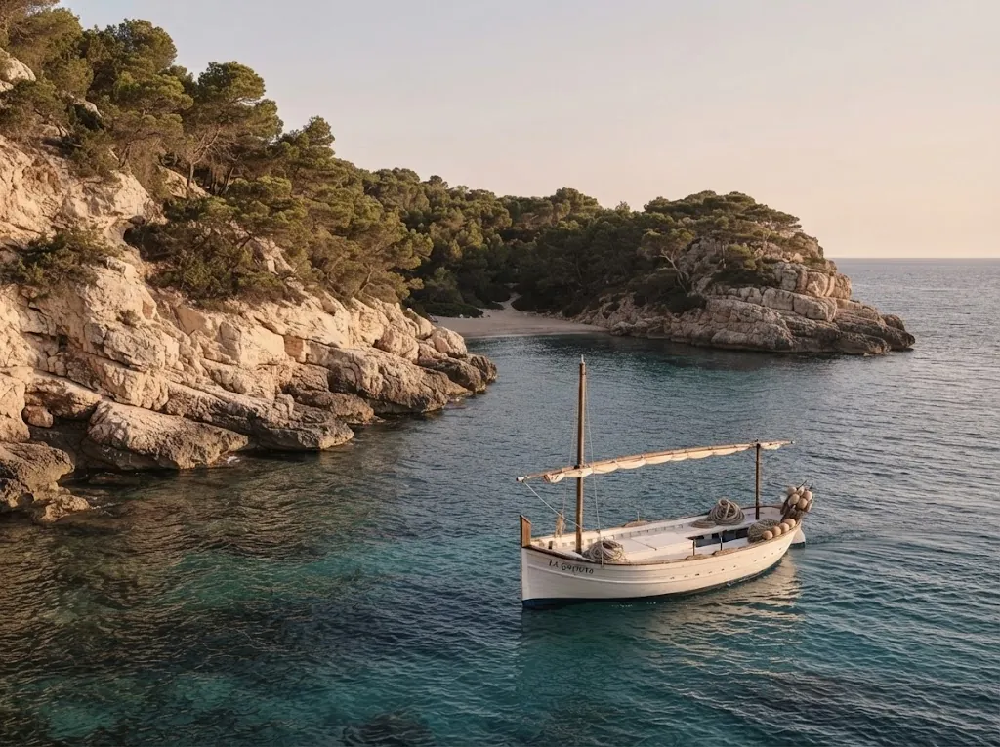

Brisa
Se abre a un patio de olivos centenarios. Lino blanco, luz de mañana y el rumor del jardín.
Desde 240 € / noche
Costa Brava · Cala Narel
Donde el mar despierta
1920
Año en que se construyó la villa
5
Habitaciones y suites, todas distintas
18+
Hotel solo para adultos
40 m
De la terraza a la cala privada
La villa
Construida en 1920 como residencia de verano, Velaure se asoma a una cala escondida junto al pueblo pesquero de Narel de Mar. Muros encalados a mano, patios de olivos centenarios y buganvillas que trepan hacia la luz. Un refugio solo para adultos, donde el tiempo se mide por las mareas y el día termina cuando el sol se hunde en el mar.
La casa perteneció a una familia de comerciantes de corcho hasta 2019, cuando se restauró respetando los suelos de barro, las vigas de madera y los muros originales. Hoy tiene solo cinco habitaciones, para que nunca haya más de diez huéspedes a la vez.

Habitaciones y suites

Se abre a un patio de olivos centenarios. Lino blanco, luz de mañana y el rumor del jardín.
Desde 240 € / noche

Un gran arco encalado enmarca el mar. Cortinas de lino que mueve la tramontana.
Desde 290 € / noche

Excavada en la roca viva, con piscina privada suspendida sobre el agua. La joya de Velaure.
Desde 520 € / noche
Servicios
Rituales con aceite de oliva y sal marina, en una gruta tallada en la roca.
Cocina de mercado con el pescado del día, servida bajo las pérgolas frente a la cala.
Agua que se funde con el horizonte, del primer baño al último atardecer.
Travesías en llaüt, calas secretas y bodegas del Empordà, a su medida.
Oferta
Para estancias de dos noches o más y dos adultos. Se añade al hacer la reserva, por 220 € por estancia.
Huéspedes
«Desayunar en la terraza con la cala para nosotros solos. No recuerdo un silencio así en un hotel.»
«La habitación Cala es otra cosa: te despiertas y lo único que ves desde la cama es agua.»
«Nos organizaron una salida en llaüt al atardecer y una cena con el pescado de esa misma mañana.»
Opiniones inventadas para este proyecto.

Ubicación
Velaure está en Cala Narel, una cala pequeña a la que solo se llega por el camino del hotel o por mar. El pueblo de Narel de Mar queda a un paseo, con su puerto, su mercado de los jueves y sus casas blancas.
Reservas